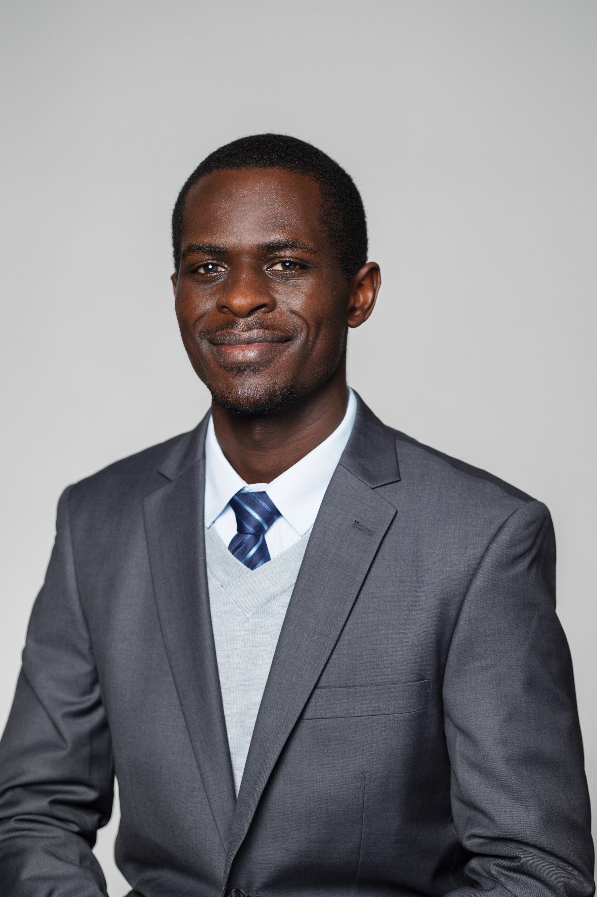

Student @Oberlin College | Aspiring Entrepreneur
If our ideas were all that mattered, then we would overcome most of life's challenges. For nearly every problem, the human mind has imagined a solution, and there is rarely an opportunity that has escaped the human eye on this planet and beyond. This is true for any part of the world as it is for Africa, where there are plenty of quality ideas.
Africans from different generations have imagined the future they want and expressed it through art, songs, poems, and books. They have understood quite well what they need to do and how to do it to realize their dreams. Yet one critical piece is missing in this puzzle - capital.
Here is the first testimonial in PDF format: